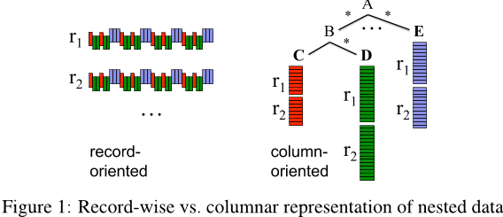
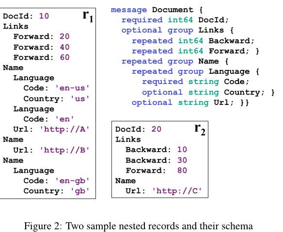
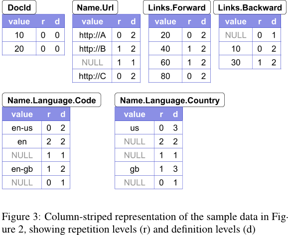
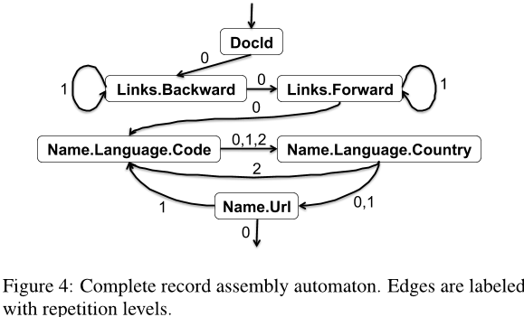
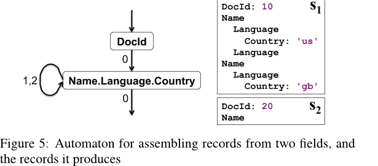
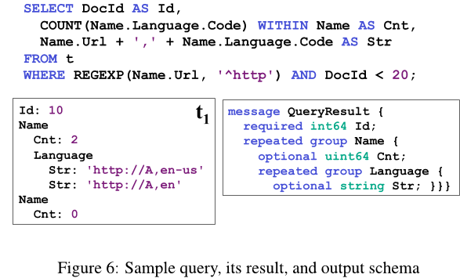
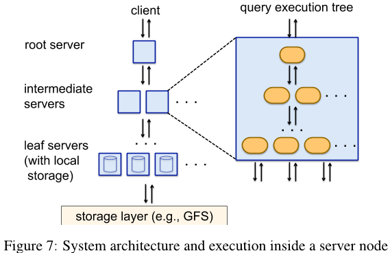

[VLDB'10] Dremel: Interactive Analysis of Web-Scale Datasets 论文阅读
#0. 摘要
Dremel 是一个可扩展、交互式的针对只读嵌套数据的分析查询系统。通过结合多级执行树和列式存储布局，它能够在秒内对万亿行表进行聚合查询。该系统能够扩展到数千 CPU 和 PB 级别的数据，并且在 Google 内部有数千用户。在这篇论文中，我们描述了 Dremel 的体系结构和实现，并解释了它是如何补充基于 MapReduce 的计算的。我们提出了一个新颖的嵌套记录的列式存储表示，并讨论了在系统的小规模实例上（不到几千个节点）所做的一些实验。
#1. 引言
大规模分析数据处理在 Web 公司和跨行业变得越来越普遍，尤其是因为低成本存储使得收集大量商业关键数据成为可能。将这些数据放在分析师和工程师的指尖变得越来越重要；交互式响应时间通常会在数据探索、监控、在线客户支持、快速原型制作、数据管道调试和其他任务中产生质的差异。
在大规模上执行交互式数据分析需要高程度的并行性。例如，使用当今的商用硬盘驱动器想要在一秒钟内读取 1TB 的压缩数据，可能需要数千个磁盘。同样，CPU 密集型查询可能需要在数千个内核上运行数秒才能完成。在 Google，使用共享的集群化机器进行大规模并行计算。一个集群通常托管许多分布式应用程序，这些程序共享资源、具有广泛的工作负载，并且在具有不同硬件参数的机器上运行。分布式应用程序中的单个工作者可能比其他工作者花费更长的时间来执行给定的任务，或者由于群集管理系统的故障或抢占而永远无法完成该任务。因此，处理拖延者和故障对于实现快速执行和容错至关重要。
用于网络和科学计算的数据通常是非关系型的。因此，在这些领域中，灵活的数据模型至关重要。编程语言中的数据结构、分布式系统中交换的消息、结构化文档等交换的数据，很自然地适合嵌套表示。在 Web 规模上规范并重新组合这样的数据通常是不可行的。Google 及其他一些主要的网络公司据报道，在其大部分结构化数据处理中都使用了基于层次结构的数据模型。
本文描述了一个名为 Dremel 的系统，该系统支持在共享的商用机器集群上对超大规模数据集进行交互式分析。与传统数据库不同，它能够就地操作嵌套的数据。这里的“就地”是指访问“就地”存储的数据的能力，例如分布式文件系统（如 GFS [14]）或另一个存储层（如 Bigtable [8]）。 Dremel 可以执行许多查询，这些查询通常需要一系列 MapReduce (MR [12]) 作业来完成，但其执行时间仅为其中的一小部分。 Dremel 不旨在取代 MR，而是经常与 MR 配合使用，用于分析 MR 管道的输出或快速原型化更大的计算任务。
Dremel 自 2006 年开始生产，拥有数千名 Google 用户。公司部署了多个 Dremel 实例，从数十个到数千个节点不等。使用该系统的例子包括：
- Analysis of crawled web documents
- Tracking install data for applications on Android Market.
- Crash reporting for Google products
- OCR results from Google Books
- Spam analysis
- Debugging of map tiles on Google Maps
- Tablet migrations in managed Bigtable instances
- Results of tests run on Google’s distributed build system
- Disk I/O statistics for hundreds of thousands of disks.
- Resource monitoring for jobs run in Google’s data centers.
- Symbols and dependencies in Google’s codebase
Dremel 是在网页搜索和并行数据库管理系统的基础上构建的。
- 它的架构借鉴了分布式搜索引擎中使用的 服务树 概念。就像网络搜索请求一样，查询会沿着树向下传递，并在每个步骤中被重写。通过聚合从树下层接收到的回复来组装查询结果。
- Dremel 提供了一种类似于 SQL 的高级语言来表达 ad hoc 查询。与 Pig 和 Hive 等层不同，它原生地执行查询而无需将其转换为 MapReduce 作业。
- 也是最重要的，Dremel 使用了一种分层存储表示法，这使得它能够从次级存储中读取更少的数据，并且通过更便宜的压缩降低 CPU 成本。列式存储已被用于分析关系数据[1]，但据我们所知，尚未扩展到嵌套数据模型。我们提出的列式存储格式得到了谷歌许多数据处理工具的支持，包括 MR、Sawzall [20] 和 FlumeJava [7] 。
本文的主要贡献如下：
- 我们描述了一种用于嵌套数据的新列式存储格式。我们在第 4 节中介绍了拆分嵌套记录并重新组装它们的算法。
- 我们概述了 Dremel 的查询语言和执行。两者都是为了高效地操作列状嵌套数据而设计的，不需要重新组织嵌套记录（第 5 节）。
- 我们展示了如何在数据库处理中应用 Web 搜索系统中使用的执行树，并解释了它们对于高效回答聚合查询的好处（第 6 部分）。
- 我们在第 7 节中报告了在运行在 1000 到 4000 个节点上的系统实例上进行的万亿记录、多 TB 数据集的实验。
#2. 背景
我们从一个示例场景开始，该示例展示了交互式查询处理如何融入更广泛的 数据管理 生态系统。假设谷歌工程师爱丽丝想出了一种提取网页中新信号的新方法。她运行了一个 MapReduce 作业，通过输入数据并生成包含新信号的数据集，在分布式文件系统中的数十亿条记录中存储这些新信号。为了分析她的实验结果，她启动了 Dremel 并执行了一些交互式命令：
1 | DEFINE TABLE t AS /path/to/data/* |
她的命令几秒钟内就能执行。她运行了一些其他的查询，以确保自己的算法有效。她在 信号 1 中发现了一个不规则性，并通过编写一个更复杂的分析计算程序，深入挖掘了她输出的数据集。问题解决后，她搭建了一个管道来处理不断输入的数据。她制定了一些预先定义好的 SQL 查询语句，对管道中的结果进行汇总，并将其添加到交互式仪表板中。最后，她在目录中注册了新的数据集，这样其他工程师就可以快速找到并查询它。
上述场景需要查询处理器和其他数据管理工具之间的互操作。为此，首先需要一个通用存储层。Google 文件系统（GFS [14]）是公司内广泛使用的一种分布式存储层。 GFS 使用复制来保存数据，尽管硬件出现故障，也能实现快速响应时间，并在存在迟到者时提供高吞吐量。高性能存储层对于原位数据管理至关重要。它允许在没有费时加载阶段的情况下访问数据，而数据库使用是分析数据处理中的主要瓶颈[13]，通常可以在数据库管理系统能够加载数据并执行单个查询之前运行数十个 MR 分析。此外，文件系统中的数据可以使用标准工具轻松操作，例如将数据传输到另一个群集、更改访问权限或根据文件名识别要分析的数据子集。

构建可互操作的数据管理组件的第二个要素是共享存储格式。 列存储对于扁平关系型数据很成功，但要使其适用于谷歌，则需要将其适应为嵌套的数据模型。 图 1 描述了这个基本思想：所有具有嵌套字段 (A.B.C) 的值都按连续方式存储。 因此，可以检索 A.B.C 而无需读取 A.E、A.B.D 等等。 我们解决的挑战在于如何保留所有结构信息并能够从任意一组字段重建记录。 接下来讨论我们的数据模型，然后介绍算法和查询处理。
#3. 数据模型
Dremel 的数据模型起源于分布式系统，广泛应用于谷歌，并以开源实现的形式提供。数据模型基于强类型的嵌套记录。它的抽象语法如下：
其中 τ 是原子类型或记录类型。原子类型内的索引包括整数、浮点数、字符串等。记录由一个或多个字段组成。记录中的第 i 个字段有一个名称 Ai 和可选的多重性标签。 Repeated 字段 * 可以在记录中出现多次。它们被解释为值列表，即记录中字段出现的顺序是有意义的。 Optional 字段 ? 可能不存在于记录中。否则，字段是必需的，即必须恰好出现一次。

例如，考虑图 2。它显示了一个定义文档类型的模式，表示一个 Web 文档。该模式定义使用了来自 [21] 的具体语法。文档有一个必需的整数型 DocId 和一个可选的链接 Links，其中包含一组向前和向后条目，每个条目都包含其他网页的 DocId。文档可以有多个名称，这些名称是以不同 URL 引用文档的方式。名称由一对一对的 Code 和（可选）Country 组成。
图 2 还展示了两个符合该模式的样本记录 r1 和 r2。记录结构使用缩进进行说明。在接下来的几节中，我们将使用这些示例记录来解释算法。模式中定义的字段形成树形层次结构。嵌套字段的完整路径使用常规点标记法表示，如 Name.Language.Code。
谷歌使用嵌套的数据模型作为其结构化数据序列化的中立且可扩展的基础。 代码生成工具为诸如 C++ 或 Java 之类的编程语言生成绑定。通过在记录之间以按顺序排列的方式布置字段值的标准二进制的 wire 表示来实现跨语言互操作性。这样，用 Java 编写的 MR 程序就可以从通过 C++ 库暴露的数据源中消费记录。因此，如果记录存储在列式格式中，则能够快速地组装它们对于与 MR 和其他数据处理工具进行交互很重要。
#4. 嵌套列式存储
如图 1 所示，我们的目标是按顺序存储给定字段的所有值以提高检索效率。在本节中，我们将解决以下挑战：
- 无损表示记录结构的列格式（第 4.1 节）
- 快速编码（第 4.2 节）
- 高效的记录组装（第 4.3 节）
#4.1 重复与定义级别
数据值本身不能传达记录结构。给定一个重复字段的两个值，我们不知道该值在哪个“级别”上被重复（例如，这些值是否来自两个不同的记录，还是同一记录中的两个重复值）。同样地，对于缺失的可选字段，我们不知道哪些包含它的记录是明确定义的。因此，我们引入了重复级别和定义级别的概念，如下面所定义的。为了参考，请参阅图 3，它总结了我们样本记录中所有原子字段的重复级别和定义级别。

重复级别。考虑图 2 中的字段 Code。它在 r1 中出现了三次。‘en-us’ 和 ‘en’ 出现在第一个 Name 中，而 ‘en-gb’ 则出现在第三个 Name 中。为了消除这些出现的歧义，我们在每个值上附带了一个重复级别。它告诉我们该值在字段路径中的哪个重复字段中重复了。 Name.Language.Code 字段路径包含两个重复字段，即 Name 和 Language。因此，Code 的重复级别范围为 0 到 2；级别 0 表示新记录的开始。假设我们正在从上到下扫描记录 r1。当我们遇到 ‘en-us’ 时，我们还没有看到任何重复字段，即重复级别为 0。当看到 ‘en’ 时，Language 字段已重复，所以重复级别为 2。最后，当我们遇到 ‘en-gb’ 时，Name 最近发生了重复（Language 只在 Name 后面出现了一次），因此重复级别为 1。因此，r1 中 Code 值的重复级别分别为 0、2 和 1。
注意，r1 中的第二个 Name 中不包含任何 Code 值。为了确定“en-gb”出现在第三个名称而不是第二个名称中，我们在 “en” 和 “en-gb” 之间添加了一个空值（参见图 3）。Code 是 Language 中的一个必填字段，因此缺少它意味着 Language 没有定义。然而，在一般情况下，要确定嵌套记录存在的级别需要额外的信息。
定义级别。路径 p 的每个字段值，特别是每个 NULL 值，都有一个定义级别，用于指定在 p 中定义成*或者?，但是实际上有值的字段的数量。例如，观察到 r1 没有向后的链接。然而，字段 Links 定义（在第一级）。为了保留此信息，我们在 Links 向后列中添加了一个具有第一级定义级别的 NULL 值。同样地，r2 中缺少 Name.Language.Country 的发生情况带有第一级定义级别，而它在 r1 中的缺失分别发生在第二级（在 Name.Language 内）和第一级（在 Name 内）。
上述编码方法 无损地保留了记录结构。为了节省篇幅，我们省略了证明。
编码。每一列都存储为一组块。每个块包含重复级别和定义级别（从现在开始，简单地称为级别）以及压缩字段值。NULL 不会明确存储，因为它们由定义级别决定：如果字段路径中可选字段的数量小于定义级别，则该定义级别表示一个空值。对于始终已定义的值不会存储定义级别。同样，只有在需要时才存储重复级别；例如，定义级别 0 暗示重复级别 0，因此后者可以省略。实际上，在图 3 中，并未为 DocId 存储任何级别。级别以位串的形式进行打包。我们只使用必要的 bit 数；例如，如果最大定义级别为 3，则每个定义级别使用 2 个 bit。
#4.2 把记录分割成列
我们已经在上文中展示了如何以表格形式对记录结构进行编码。下一个我们要解决的问题是如何高效地生成重复度高且定义层次分明的列块。
计算重复和定义级别的基本算法在附录 A 中给出。 算法递归进入记录结构并为每个字段值计算级别。 如前所述，即使字段值缺失，也可能会计算重复和定义级别。 Google 使用的许多数据集都是稀疏的；比较常见的是具有数千个字段的 Schema，但是在一条记录中只有一百个被用到。因此，我们试图以尽可能低的成本处理缺失字段。为了产生列块，我们创建了一个 field writer 的树，其结构与模式中的字段层次结构匹配。基本思想是只在 field writer 拥有自己的数据时更新它们，并且除非绝对必要，否则不尝试将父状态传播到树的下一级。为了做到这一点，子 Writer 从他们的父母那里继承了层次结构。每当添加一个新值时，子 Writer 就会与父级同步。
#4.3 记录的组装
高效地从行列数据中组装记录对面向记录的数据处理工具（例如，MapReduce）至关重要。给定一个字段子集，我们的目标是重建原始记录，就像它们只包含所选字段一样，所有其他字段都被删除了。关键思想是这样的：我们创建了一个有限状态机 (FSM)，它读取每个字段的值和级别，并按顺序将值附加到输出记录中。 FSM 的状态对应于每个选定字段的字段读取器。状态转换带有重复级别标签。一旦读者获取了一个值，我们就查看下一个重复级别以确定要使用哪个下一个读者。对于每条记录，FSM 从起始状态遍历到结束状态一次。

图 4 显示了一个在我们的示例中重建完整记录的状态机。状态机的起始状态为文档 ID。一旦读取了文档 ID 值，状态机会转换到 Links.Backward。当所有重复的 Backward 值都已消耗完后，状态机会跳转到 Links.Forward 等等。有关记录组装算法的详细信息，请参见附录 B。
为了概述 FSM 状态转移是如何构建的，让 l 是当前字段读取器为字段 f 返回的下一个重复级别。从 schema 树中的 f 开始，在其祖先中找到一个在级别 l 处重复，并选择该祖先内的第一个叶子字段 n。这给我们带来了 FSM 转换(f,l)->n。例如，假设 l = 1 是通过 Name.Language.Country 字段读取的下一个重复级别。它的具有重复级别的 1 级祖先为 Name，其第一个叶子字段为 n = Name.Url。FSM 构造算法的详细信息请参见附录 C。

如果只需要检索子集字段，那么我们构造一个更简单的有限状态机来执行。图 5 展示了一个读取字段 DocId 和 Name.Language.Country 的有限状态机。图中展示了由自动机生成的输出记录 s1 和 s2。注意我们的编码和组装算法
#5. 查询语言

Dremel 的查询语言基于 SQL，并旨在高效地在 列存储的嵌套表 上实现。本文档的范围不包括对语言的正式定义；相反，我们展示了它的风格。每个 SQL 语句（以及它转换为的代数运算符）都以一个或多个嵌套表及其模式作为输入，并产生一个嵌套表及其输出模式。图 6 显示了一个示例查询，该查询执行投影、选择和记录内的聚合。对该查询进行评估时使用了来自图 2 中的表 t={r1, r2}。字段通过路径表达式进行引用。尽管查询中没有记录构造器，但该查询会产生一个嵌套的结果。
为了说明查询做了什么，考虑选择操作（WHERE 子句）。把嵌套记录想象成一个带标签的树，每个标签都对应着一个字段名。选择运算符会去掉不满足指定条件的树上的分支。因此，只有那些 Name.Url 被定义且以 http 开头的嵌套记录被保留下来。接下来考虑投影。SELECT 子句中的每个标量表达式都在与该表达式中使用最频繁的输入字段相同的层次上产生值。因此，字符串连接表达式会在输入模式中的 Name.Language.Code 层次上产生 Str 值。COUNT 表达式演示了记录内的聚合。聚合在每个 Name 子记录内进行，并为每个 Name 输出 Name.Language.Code 的出现次数，作为一个无符号 64 位整数（uint64）。
该语言支持嵌套子查询、跨记录和内记录聚合、top-k、连接、用户定义函数等；实验部分举例说明了其中的一些功能。
#6. 查询执行
为了简单起见，我们在只读系统中讨论核心思想。 许多 Dremel 查询是一次性聚合； 因此，我们专注于解释这些，并在下一部分使用它们进行实验。 我们将在未来的工作中推迟连接、索引、更新等的讨论。

树形架构。Dremel 使用多层服务树来执行查询（参见图 7）。
- 根服务器接收传入的查询，从表中读取元数据，并将查询路由到服务树的下一层。
- 叶节点服务器负责和存储层进行交互或访问本地磁盘的数据。
考虑下面一个简单的聚合查询：
1 | SELECT A, COUNT(B) FROM T GROUP BY A |
当根服务器接收到上述查询时，它会确定由 T 组成的所有 tablet（即表的水平分区），并重写查询如下：
1 | SELECT A, SUM(c) FROM(R^1_1 UNION ALL... R^1_n) GROUP BY A |
T^1_i 是服务器 i 在第一级处理的 T 中的不相交分区。每个服务级别执行类似的重写。最后，查询到达叶节点，并行扫描 T 中的表。在向上返回的过程中，中间服务器并行聚合部分结果。上面描述的执行模型非常适合于聚合查询，这些查询返回小型或中型的结果集，它们是一类非常常见的交互式查询。大型聚合和其他类型的查询可能需要依赖于并行 DBMS 和 MR 已知的执行机制。
查询调度程序。Dremel 是一个多用户系统，即通常会同时执行多个查询。查询调度程序根据其优先级对查询进行调度并平衡负载。它的重要作用是在一个服务器比其他服务器慢很多或某个表格外存副本无法访问时提供容错能力。
每个查询处理的数据量通常都大于可用于执行的处理单元数，即我们所称的 slot。一个 slot 对应于叶服务器上的一个执行线程。例如，一个由 3,000 台叶服务器组成的系统，每台服务器使用 8 个线程，则有 24,000 个 slot。因此，对于一个包含 100,000 个 tablet 的表，每个 slot 需要处理 5 个 tablet。在查询运行期间，查询分发器计算 tablet 处理时间直方图。如果某个 tablet 处理时间过长，就会将其调度到另一个服务器上。有些 tablet 可能需要被重新调度多次。
叶节点服务器以分块形式读取列式存储的嵌套数据。每个条带中的块异步预取；通常情况下，read-ahead 的缓存命中率为 95%。 tablet 通常是三个副本。当一个叶节点无法访问一个平板副本时，它会 fallback 到另一个副本。
查询调度程序遵守一个参数，该参数指定了在返回结果之前必须扫描的最小百分比。将此参数设置为较低值（例如 98％而不是 100％）通常可以显著加快执行速度，尤其是复制因子较小时。（译者注：因为 straggler 的存在）
每个服务器都有一个内部执行树，如图 7 所示的右侧所示。内部树对应于物理查询执行计划，包括标量表达式的评估。为大多数标量函数生成了优化的、类型特定的代码。项目选择聚合查询的执行计划由一组迭代器组成，它们以步调扫描输入列，并发出带有正确重复级别和定义级别的聚合和标量函数的结果，在查询执行过程中完全跳过记录组装。有关详细信息，请参阅附录 D。
Dremel 的一些查询，如 top-k 和 count-distinct，使用已知的 one-pass 算法（例如[4]）返回近似结果。
#7. 实验
略
#参考资料
- zhjwpku 论文阅读笔记
- Apache Parquet 的实现参考了 Dremel 的数据模型，Apache Drill 的实现参考了 Dremel 的查询模型。